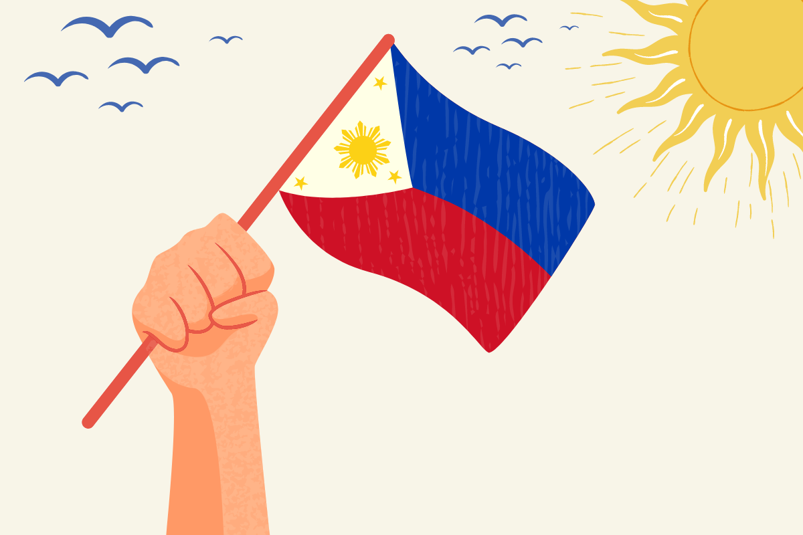

Date: June 12, 2025
What do people do?
Independence Day is a significant occasion when many people, including government officials, employees, and students, take part in nationwide parades.
The main highlight of the celebrations is the police and military parade in Manila, led by the country’s incumbent president.
This event is often followed by a speech and a 21-gun salute. Many Filipinos also spend the day enjoying time in parks and malls.
Additionally, Filipino communities around the world celebrate the nation’s Independence Day.
Public Life
The Philippines Independence Day is a national holiday, which means that government offices are closed.
There are no classes in any schools. Most businesses are also closed, with the exception of shopping centers.
Public transportation, including buses, jeepneys, and tricycles, continues to operate, but their routes may be limited due to the street closures for parades.

Background
The annual observance of Philippine Independence Day on June 12 was established when former President Diosdado Macapagal signed Republic Act No. 4166 on August 4, 1964.
This act legalized the holiday, which commemorates the Declaration of Independence made on June 12, 1898, by General Emilio Aguinaldo and Filipino revolutionary forces, marking their liberation from Spanish colonization.
It was on this date that the Philippine flag was raised, and the national anthem was played for the first time.
However, this newfound liberty was short-lived, as neither Spain nor the United States recognized the declaration.
The 1898 Treaty of Paris formally ended the war between Spain and the United States, resulting in Spain ceding the entire archipelago of the Philippines to the United States.
In 1899, Filipinos began a revolt against American rule, ultimately achieving national sovereignty on July 4, 1946, through the Treaty of Manila.
Prior to the approval of Republic Act No. 4166, Independence Day was officially celebrated on July 4.
Symbols
The Flag of the Republic of the Philippines, representing the country is symbolized by the following:
References/Sources